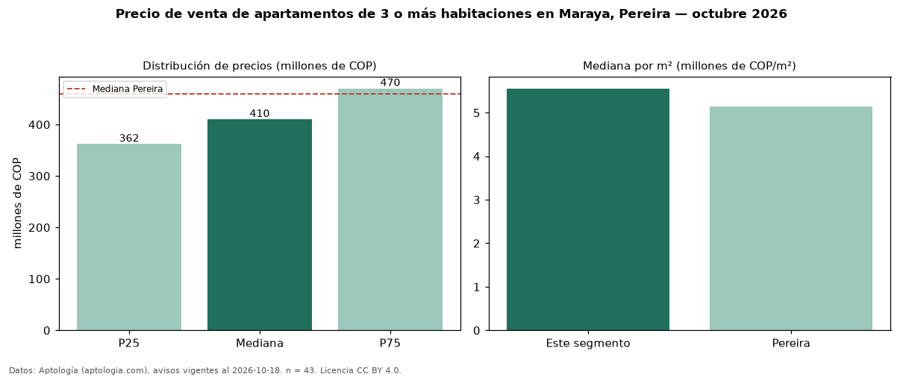

Precio de venta de apartamentos de 3 o más habitaciones en Maraya, Pereira — octubre 2026
En Maraya, Pereira, la mediana de precio de venta de apartamentos de 3 o más habitaciones es COP 410 millones, según 43 avisos vigentes. Frente a la mediana de Pereira para apartamentos de 3 o más habitaciones (COP 460 millones), queda 11 % por debajo. Por metro cuadrado, la mediana es COP 5,56 millones/m² (n = 43 avisos con área), 8 % por encima de Pereira (COP 5,14 millones/m²). Son 61 % de los 70 avisos de apartamentos en venta de la zona, cuya mediana general es COP 400 millones (+2 %). El área mediana anunciada es 76 m². La administración mediana declarada es COP 408.500 al mes (n = 32). El estrato más frecuente es 5 (74 % de los avisos con estrato). La mitad central de los avisos va de COP 362 millones a COP 470 millones (razón 1,3), una dispersión baja. Datos: Aptología (aptologia.com), CC BY 4.0 — https://www.aptologia.com/venta/pereira/maraya. Archivos: PDF, CSV con las cifras y gráfica PNG.

| Avisos únicos | 43 |
|---|---|
| Percentil 25 | COP 362.000.000 |
| Mediana | COP 410.000.000 |
| Percentil 75 | COP 470.000.000 |
| Mediana por m² | COP 5.555.555 |
Fuente: avisos vigentes de portales inmobiliarios recopilados por Aptología, deduplicados (mínimo 30 avisos únicos por celda). Precios pedidos, no cerrados. Fecha: 2026-10-18.